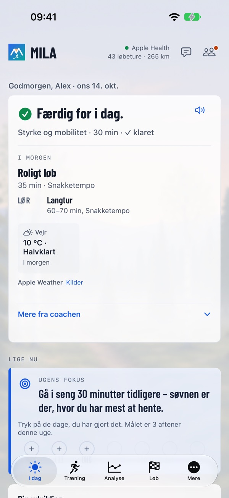
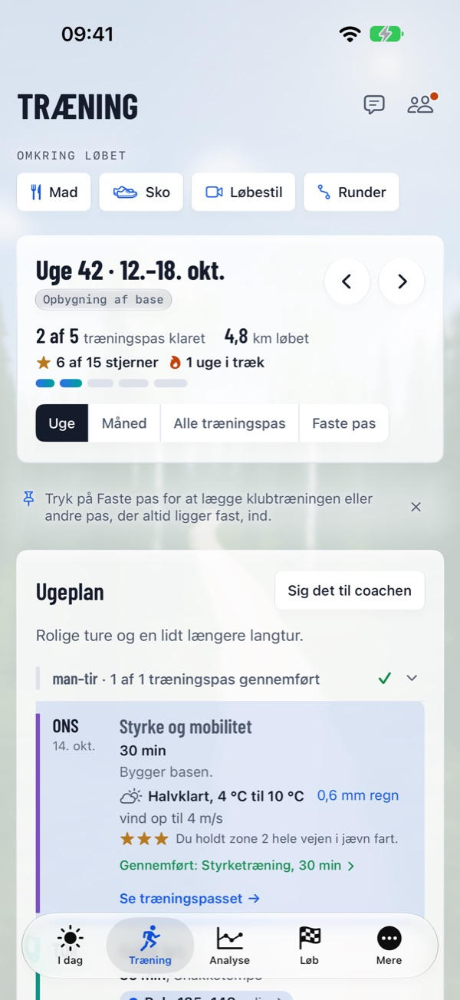
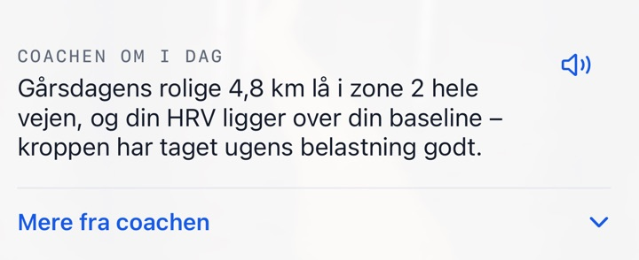

Den rette træning. Den rette dag.
En coach, der læser din krop og dit liv hver morgen – hele vejen til mål.
Mila tager udgangspunkt i dine egne data, din form i dag og dit mål. Hver morgen kommer coachens besked først – klar, normal dag eller tag det roligt – og så dagens træning, som den ser ud nu: træning, der passer til dit liv, gør dig stærkere mod dit mål og aldrig beder dig tyde et eneste diagram.



Mere ud af træningen, mindre at spekulere over
Den rette træning hver dag – efter hvordan du har det, og hvordan din hverdag ser ud.
Derfor er Mila anderledes
Dit ur måler. Mila gør det til den rette træning for dig.
Mila-følelsen
Den rette træning. Den rette dag. Alt i Mila tager udgangspunkt i det.
En coach et tryk væk
Hver morgen får du coachens besked og dagens træning, det bedste tidspunkt at løbe og hvad du skal have på i vejret. Noten kan du få læst op. Ændrer livet sig, så sig det til coachen med dine egne ord, og undrer du dig over noget, så spørg coachen – svarene kender dine data. Når ugen slutter – søndag aften eller senest mandag morgen – kommer ugens opsamling og planen for næste uge.

Mila på håndleddet
Milas app på Apple Watch viser din dag, optager dit løb og spørger, hvordan turen gik. Andre ure virker via Apple Health.
Alt, hvad en løber har brug for
Fra den første rolige tur til løbsdagen.
Ugeplan og analyse
En ugeplan med styrkeprogrammer og træningspas, du kan flytte. Efter turen plan mod gennemført, ruten farvet efter tempo og lignende ture. Dine mønstre, Sammenlignet med, Rekorder over tid og Mit løbeår.
Milas løbskalender
Officielle løb med kort, højdeprofil, væskedepoter og link til arrangøren – eller upload ruten selv (GPX, KML, TCX eller ZIP). Hvert løb i kalenderen har også sin egen side: milacoach.app/da/lob.
Før og efter løbet
Prognose, tempoplan efter højdeprofilen, energiplan, Er jeg klar?, løbsguide og løbsmorgen. Bagefter kilometertider mod planen, coachens løbsanalyse og dit officielle resultat.
Løbestil
Film i appen, eller vælg en video. Kun stillbilleder sendes, med slørede ansigter, og videoen forlader aldrig din iPhone. Coachen giver observationer og øvelser, bygger dem ind i din plan og følger op over tid.
Sko
Coachen vurderer, hvor længe hver sko holder for dig – cirka hvor mange kilometer og uger i dit tempo. Læs din skolog ind fra et billede eller en CSV-fil.
Mad
Tag et billede af eller beskriv et måltid, så vurderer coachen det og kobler det til din træning. Ret det med dine egne ord, vis det uden tal, eller log med Siri.
Del
Billeder af ture og løb med en baggrund i Mila-stil fra stedet, et tekstforslag og en linje fra coachen.
I kalenderen
Coachens træningspas i den kalender, du vælger, på det tidspunkt, hvor vejret er bedst.
I gang på få minutter
Fortæl coachen om dig selv og dit mål, se hvordan coachen har forstået dig, og få din første uge. Prøv Mila Coach gratis i en uge.
Virker med dit ur
Mila læser dine ture fra Apple Health, så du behøver ikke et bestemt ur.
Dine data forbliver dine
Data fra Apple Health læses på din iPhone; et resumé går til coachen, efter du har givet samtykke, sammen med det, du forbinder eller sender (en forbundet urtjeneste, billeder af måltider, billeder af din skolog, stillbilleder fra videoer af din løbestil). Din konto gemmes i EU (Irland). Coachens tekster skrives af en ekstern AI-tjeneste i USA efter EU's standardkontraktbestemmelser. Mila sælger aldrig dine data og bruger dem aldrig til reklame, og du kan til enhver tid slette din konto med alt i den. Mila giver generelle træningsråd, ikke medicinsk rådgivning.